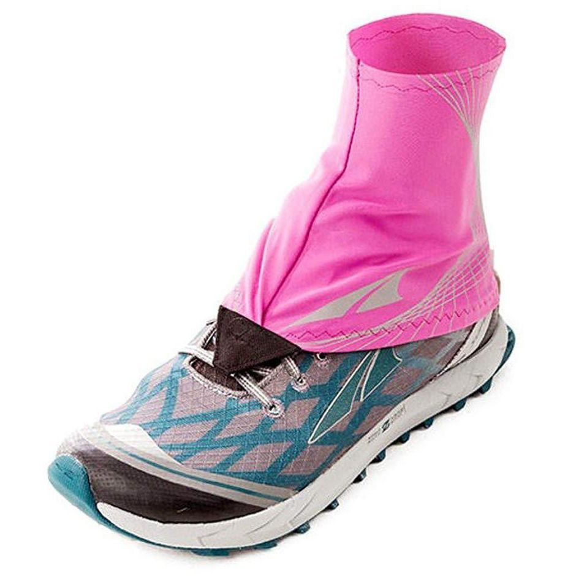

Зима близько: корисне екіпірування для холодної пори року
Для тих, у кого ця бігова зима буде першою, ми написали статтю про підбір екіпіровки, необхідної для комфортних та безпечних пробіжок у холод.
Найскладніше в зимовому бігу — зробити перший крок за двері . А далі з’ясується, що не так вже й холодно, дихати свіжим повітрям приємно, та й загалом приємніші відчуття, ніж під час тренувань у спеку. Щоправда, погода в цей час може підкидати сюрпризи у вигляді вітру, снігу, дощу та слизьких доріг. І щоб морально підготувати вас до цих обставин, розповідаємо про екіпірування, яке зробить пробіжки і комфортнішими, і безпечнішими.
Зимові кросівки
Ідеальні кросівки на зиму водонепроникні, захищають від вітру та оснащені агресивною підошвою для кращого зчеплення з поверхнею. Саме тому — як зимові варіанти популярні різні варіанти з непроникним верхом. Зазвичай, це мембрана Gore-Tex, проте майже у кожного бігового бренду тепер трапляється свій аналог, який дає раду із завданням не гірше за Гортекс.
Уникайте моделей з хорошою вентиляцією та невагомою одношаровою сіткою – ноги в таких кросівках будуть швидко мерзнути і промокати.
Холодостійкі бігуни можуть весь зимовий сезон провести і у звичайному асфальтовому взутті, проте, якщо це ваша перша бігова зима, навряд чи ви достатньо загартовані, щоб повторювати подібний досвід.
Теплі шкарпетки
Вибір шкарпеток залежить від типу взуття, яке ви носитимете. Якщо це утеплені кросівки з водонепроникним верхом, підійдуть звичайні бігові зі спортивної синтетики. Шкарпетки повинні бути високими, щоб захищати ахіли від переохолодження, тому про короткі шкарпетки доведеться тимчасово забути.
Якщо ж ви плануєте провести зиму у звичайному “всесезонному” взутті, то все не так просто: у легких шкарпетках ноги на початку тренування можуть замерзнути, а якщо одягнути занадто теплі в’язані — вони швидко спітніють і потрібно буде вирішувати завдання з відведенням вологи.
Тому є спеціальні утеплені моделі бігових шкарпеток, які і зігрівають, і залишають ноги сухими, захищаючи від натирань.
Більшість виробників для виготовлення таких шкарпеток використовують шерсть мериноса. Вона тонша і м’якша, ніж звичайна вовна, чудово справляється з відведенням вологи, а також здатна утримувати повітря між волокнами, захищаючи від холоду. І хоча така тканина неймовірно зручна, вона не є надто міцною, тому виробники додають у неї синтетичні матеріали для більшої довговічності.
Деякі бігуни радять вкручувати шипи просто в підошву кросівок, щоб модернізувати їх для зимових завдань. Але ми вважаємо, що набагато зручніше взувати спеціальні шиповані насадки поверх взуття. Це чудовий і недорогий спосіб отримати краще зчеплення з поверхнею на втоптаному снігу та слизьких ділянках дороги.
Вибирайте льодоступи з великою кількістю шипів (зазвичай 10), вони повинні бути розташовані як у зоні п’яти, так і носка.
Пам’ятайте: коли на вулиці сильна ожеледиця, жодні льодоступи не захистять вас від можливих падінь та травм. За зовсім екстремальних погодних умов краще потренуватися на біговій доріжці або замінити біг на ЗФП (наприклад, пліометрику).
Не найнеобхідніший предмет, але вони дійсно дуже зручні, коли потрібно бігати стежками, де снігу більше, ніж по щиколотку. Гамаші (їх ще називають бахіли) бувають високими чи короткими, і легко пристібаються до кросівок. Більшість бахіл водонепроникні.
Не хочете, щоб у взуття потрапляв сніг, дрібні камінці чи сміття – одягайте бахіли!
Ввечері швидко темніє, тому дуже важливо подбати про безпеку. Світловідбивний одяг або окремі елементи зроблять вас помітним на дорозі для пішоходів та водіїв. В ідеалі, чим яскравіший одяг, тим краще, але навіть якщо ви віддаєте перевагу total black – варто додати в образ яскравих деталей, – наприклад, світловідбиваючий жилет.
Виробники бігового екіпу теж підхопили тему і тепер багато технічних зимових комплектів мають світловідбивні панелі та принти.
Щоб захистити голову та вуха від холоду та вітру знадобиться функціональна шапка – ще один обов’язковий зимовий аксесуар. Залежно від температури та умов за бортом, можна обійтися як легким бафом-трансформером, так і подбати про утеплений варіант на флісі.
Про те, які бувають шапки і що взагалі варто надягати на голову залежно від погоди, ми розповіли в окремій статті .
Звичайні міські шапки для бігу не підходять — вони не відводять вологу від спітнілої голови і вам буде щонайменше некомфортно. До того ж у мороз під такою шапкою намерзає лід.
Мороз та вітер погано впливають на незахищену шкіру рук. А ще у кожного з нас різний теплообмін, тому навіть у рукавичках багато бігунів мерзнуть в руки, коли тіло вже зігрілося.
Тому вибирайте рукавички залежно від особистих уподобань: чи мають вони бути водонепроникними, чи потрібен захист від вітру, чи, можливо, знадобляться моделі зі спеціальними вставками, які дозволяють користуватися смартфоном або сенсорним екраном годинника?
Якщо ваші руки схильні мерзнути, спробуйте грубі рукавиці замість рукавичок – у них краще зберігається тепло.
Мембранна непромокна куртка в зимовий сезон стане в нагоді кожному. Вона не тільки захистить від снігу та дощу, а й вбереже від холодного вітру, а значить перешкоджатиме втраті тепла. Краще брати куртку із проклеєними швами – вона забезпечує повну водонепроникність.
З недоліків — напевно, це буде найдорожча річ у вашому зимовому комплекті. Проте якісна річ і прослужить не один рік. Офіційний інтернет-магазин в Україні
Змерзлі м’язи втомлюються швидше і працюють гірше, тому важливо підібрати якісні тайтси для холодної погоди. Зимові легінси забезпечують свободу рухів, захищають від тривалої дії низьких температур. Водночас, відводячи піт, вони дозволяють шкірі дихати, щоб запобігти перегріванню.
Тим, хто не любить приталений крій, підійдуть більш вільні варіації теплих бігових штанів. Вибирайте моделі з високою посадкою, щоб додатково захистити поперек від переохолодження.
Як і у випадку з біговою курткою, такі тайтси не будуть дешевими, зате служитимуть довго.
Взимку світловий день короткий, а значить, частину своїх тренувань доведеться проводити в темряві. Якщо ви живете в районі з обмеженим вуличним освітленням або хочете відправитися на трейловий крос у сутінках, то до списку бажань слід додати ліхтарик налобний.
На ринку представлений широкий асортимент налобних ліхтариків, тому вибирайте виходячи з особистої зручності: девайс повинен надійно кріпитися, не ковзати і не спадати, з тривалим терміном служби батареї, периферійним освітленням та бути легким.
Зверніть увагу на яскравість світла (вимірюється в люменах): що вище число люменів, то яскравіше світитиме ліхтарик.